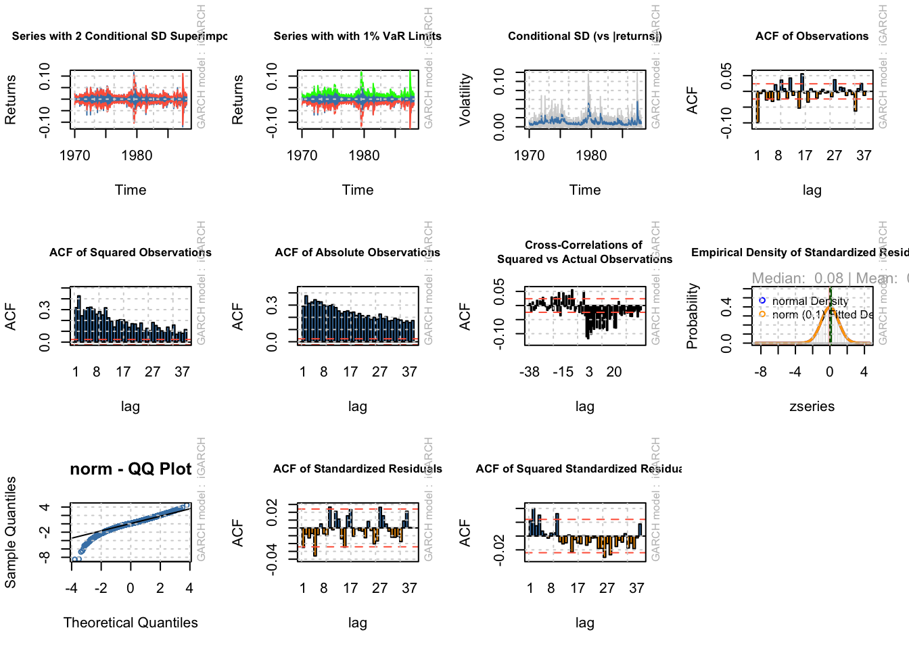
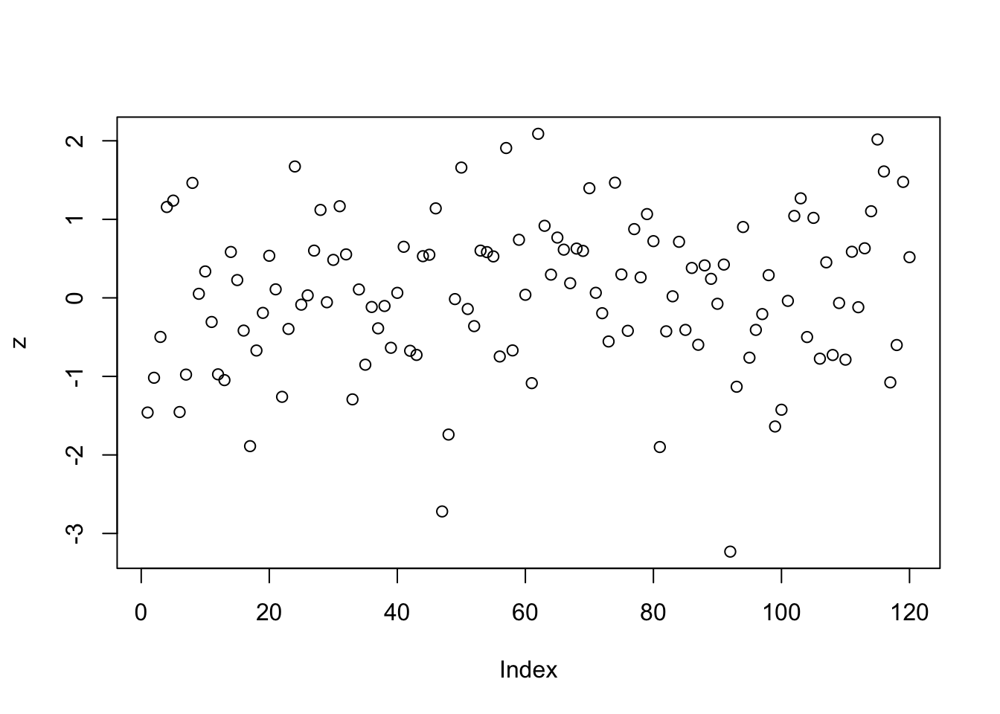
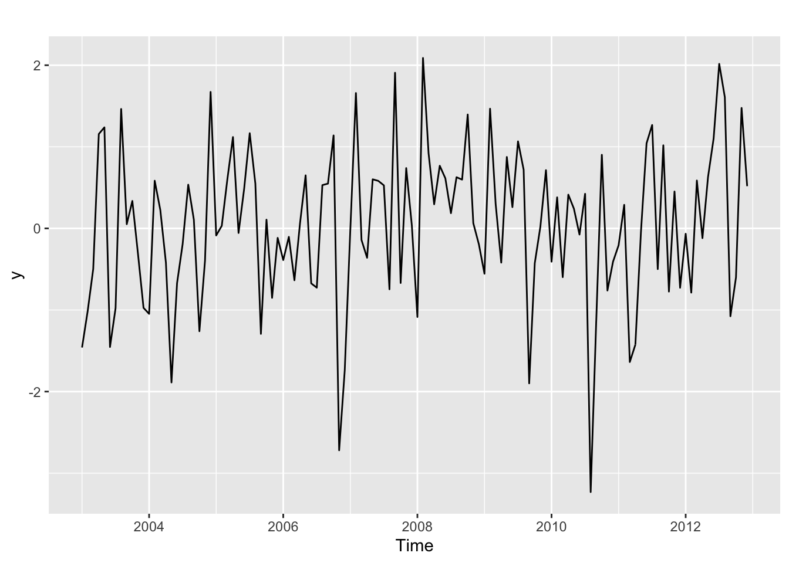
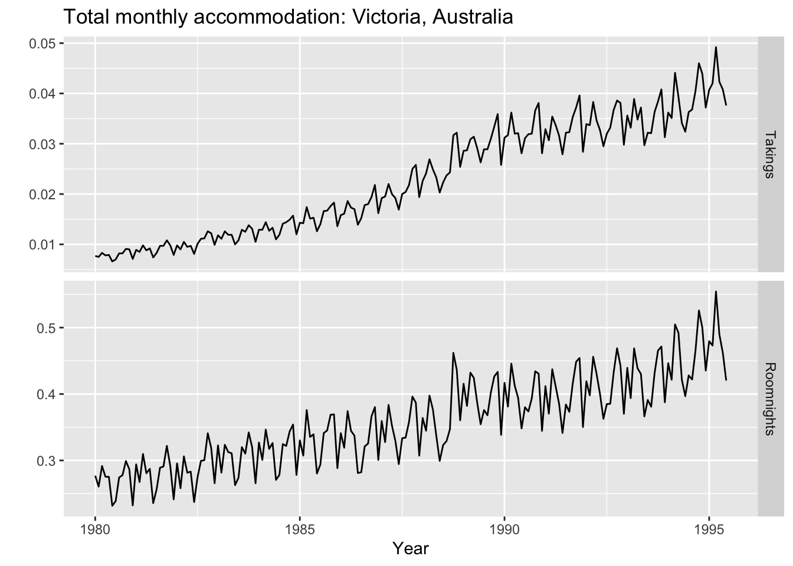
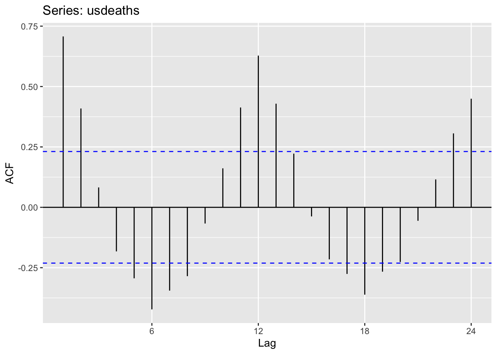

Chapter 11 Time series with R
11.1 Lesson 1: Introduction to R
## [1] 5## [1] 2.5# These are equivalent
y=4
y<-4 #this was the original one used and that's why you will see it in many places
#load fpp2
library(fpp2)## Registered S3 method overwritten by 'quantmod':
## method from
## as.zoo.data.frame zoo## ── Attaching packages ────────────────────────────────────────────── fpp2 2.4 ──## ✓ ggplot2 3.3.2 ✓ fma 2.4
## ✓ forecast 8.12 ✓ expsmooth 2.3## 
# Equivalent to typing in the help menu
?mean
# Example in the help menu for the mean
x <- c(0:10, 50)
length(x)## [1] 12## Time Series:
## Start = 1980
## End = 2015
## Frequency = 1
## [1] 0.8298943 0.8595109 0.8766892 0.8667072 0.9320520 1.0482636 1.3111932
## [8] 1.6375623 2.0641074 1.9126828 2.0354457 2.1772113 2.3896834 2.7505921
## [15] 3.0906664 3.4266403 3.8306491 3.9719086 3.8316004 4.1431010 4.5665510
## [22] 4.4754100 4.4627960 4.3848290 4.7968610 5.0150490 5.0634350 5.1454890
## [29] 5.0994360 5.0881660 5.3537020 5.3433270 5.5891620 5.9048840 6.3571830
## [36] 6.8589530# Ignore the error message and keep going
# Lets look at some data sets from fpp
austa #International vistors to Australia## Time Series:
## Start = 1980
## End = 2015
## Frequency = 1
## [1] 0.8298943 0.8595109 0.8766892 0.8667072 0.9320520 1.0482636 1.3111932
## [8] 1.6375623 2.0641074 1.9126828 2.0354457 2.1772113 2.3896834 2.7505921
## [15] 3.0906664 3.4266403 3.8306491 3.9719086 3.8316004 4.1431010 4.5665510
## [22] 4.4754100 4.4627960 4.3848290 4.7968610 5.0150490 5.0634350 5.1454890
## [29] 5.0994360 5.0881660 5.3537020 5.3433270 5.5891620 5.9048840 6.3571830
## [36] 6.8589530## Min. 1st Qu. Median Mean 3rd Qu. Max.
## 0.8299 2.0048 3.9018 3.5414 5.0696 6.8590## Jan Feb Mar Apr May Jun Jul
## 1991 3.526591
## 1992 5.088335 2.814520 2.985811 3.204780 3.127578 3.270523 3.737851
## 1993 6.192068 3.450857 3.772307 3.734303 3.905399 4.049687 4.315566
## 1994 6.731473 3.841278 4.394076 4.075341 4.540645 4.645615 4.752607
## 1995 6.749484 4.216067 4.949349 4.823045 5.194754 5.170787 5.256742
## 1996 8.329452 5.069796 5.262557 5.597126 6.110296 5.689161 6.486849
## 1997 8.524471 5.277918 5.714303 6.214529 6.411929 6.667716 7.050831
## 1998 8.798513 5.918261 6.534493 6.675736 7.064201 7.383381 7.813496
## 1999 10.391416 6.421535 8.062619 7.297739 7.936916 8.165323 8.717420
## 2000 12.511462 7.457199 8.591191 8.474000 9.386803 9.560399 10.834295
## 2001 14.497581 8.049275 10.312891 9.753358 10.850382 9.961719 11.443601
## 2002 16.300269 9.053485 10.002449 10.788750 12.106705 10.954101 12.844566
## 2003 16.828350 9.800215 10.816994 10.654223 12.512323 12.161210 12.998046
## 2004 18.003768 11.938030 12.997900 12.882645 13.943447 13.989472 15.339097
## 2005 20.778723 12.154552 13.402392 14.459239 14.795102 15.705248 15.829550
## 2006 23.486694 12.536987 15.467018 14.233539 17.783058 16.291602 16.980282
## 2007 28.038383 16.763869 19.792754 16.427305 21.000742 20.681002 21.834890
## 2008 29.665356 21.654285 18.264945 23.107677 22.912510 19.431740
## Aug Sep Oct Nov Dec
## 1991 3.180891 3.252221 3.611003 3.565869 4.306371
## 1992 3.558776 3.777202 3.924490 4.386531 5.810549
## 1993 4.562185 4.608662 4.667851 5.093841 7.179962
## 1994 5.350605 5.204455 5.301651 5.773742 6.204593
## 1995 5.855277 5.490729 6.115293 6.088473 7.416598
## 1996 6.300569 6.467476 6.828629 6.649078 8.606937
## 1997 6.704919 7.250988 7.819733 7.398101 10.096233
## 1998 7.431892 8.275117 8.260441 8.596156 10.558939
## 1999 9.070964 9.177113 9.251887 9.933136 11.532974
## 2000 10.643751 9.908162 11.710041 11.340151 12.079132
## 2001 11.659239 10.647060 12.652134 13.674466 12.965735
## 2002 12.196500 12.854748 13.542004 13.287640 15.134918
## 2003 12.517276 13.268658 14.733622 13.669382 16.503966
## 2004 15.370764 16.142005 16.685754 17.636728 18.869325
## 2005 17.554701 18.100864 17.496668 19.347265 20.031291
## 2006 18.612189 16.623343 21.430241 23.575517 23.334206
## 2007 23.930204 22.930357 23.263340 25.250030 25.806090
## 2008
## Min. 1st Qu. Median Mean 3rd Qu. Max.
## 2.815 5.844 9.319 10.694 14.290 29.665# You will practice reading in your own data in the tutorials this week
# and next week. This will set you up well for the assignment
# This creates a vector y of observations
y=c(1,2,3,4,5,6)
mean(y)## [1] 3.511.2 Lesson 2: Time series graphic
## [1] 123 39 78 52 110
## Time Series:
## Start = 2012
## End = 2016
## Frequency = 1
## [1] 123 39 78 52 110## Jan Feb Mar Apr May
## 2003 123 39 78 52 110 # For higher frequency data use the frequency argument
# setwd("C:/George/Teaching/ETF3231/2018/RinLectures")
x <- scan(here::here("data","gdp.dat"))
ausgdp <- ts(x,frequency=4,
start=1971.5) # Data starts in Q3
plot(ausgdp) # part of base graphics
## $tsp
## [1] 2003.000 2012.917 12.000
##
## $class
## [1] "ts"
## Time Series:
## Start = 1989
## End = 2008
## Frequency = 1
## [1] 2354.34 2379.71 2318.52 2468.99 2386.09 2569.47 2575.72 2762.72 2844.50
## [10] 3000.70 3108.10 3357.50 3075.70 3180.60 3221.60 3176.20 3430.60 3527.48
## [19] 3637.89 3655.00 ?elecsales
# Everyone to plot
# Also ask them to use the help command - you will need to do
# this a lot
# ? is shorthand for help()
# Ask everyone to type melsyd to see what they get
melsyd # let's have a look## Time Series:
## Start = c(1987, 26)
## End = c(1992, 48)
## Frequency = 52
## First.Class Business.Class Economy.Class
## 1987.481 1.912 NA 20.167
## 1987.500 1.848 NA 20.161
## 1987.519 1.856 NA 19.993
## 1987.538 2.142 NA 20.986
## 1987.558 2.118 NA 20.497
## 1987.577 2.048 NA 20.770
## 1987.596 2.111 NA 21.111
## 1987.615 2.199 NA 20.675
## 1987.635 2.231 NA 22.092
## 1987.654 2.081 NA 20.772
## 1987.673 2.213 NA 21.642
## 1987.692 2.131 NA 21.911
## 1987.712 NA NA NA
## 1987.731 2.131 NA 23.777
## 1987.750 2.034 NA 22.658
## 1987.769 2.190 NA 23.515
## 1987.788 2.262 NA 21.384
## 1987.808 2.579 NA 24.344
## 1987.827 2.367 NA 21.137
## 1987.846 2.432 NA 23.069
## 1987.865 2.640 NA 23.664
## 1987.885 2.614 NA 23.219
## 1987.904 2.569 NA 23.192
## 1987.923 2.523 NA 23.475
## 1987.942 2.260 NA 22.377
## 1987.962 1.117 NA 16.606
## 1987.981 0.590 NA 13.987
## 1988.000 0.966 NA 16.251
## 1988.019 1.235 NA 18.439
## 1988.038 2.001 NA 20.262
## 1988.058 1.696 NA 19.535
## 1988.077 2.089 NA 22.467
## 1988.096 2.716 NA 24.559
## 1988.115 2.483 NA 24.591
## 1988.135 2.461 NA 24.511
## 1988.154 2.533 NA 24.524
## 1988.173 2.273 NA 23.119
## 1988.192 2.273 NA 23.106
## 1988.212 2.370 NA 23.292
## 1988.231 1.782 NA 21.566
## 1988.250 1.385 NA 18.565
## 1988.269 2.322 NA 24.361
## 1988.288 2.340 NA 22.983
## 1988.308 2.203 NA 21.062
## 1988.327 2.300 NA 21.766
## 1988.346 2.125 NA 22.285
## 1988.365 2.345 NA 22.867
## 1988.385 2.224 NA 23.276
## 1988.404 1.952 NA 20.924
## 1988.423 2.212 NA 21.716
## 1988.442 2.028 NA 20.908
## 1988.462 1.906 NA 21.410
## 1988.481 1.834 NA 21.361
## 1988.500 1.797 NA 22.412
## 1988.519 1.869 NA 21.290
## 1988.538 1.886 NA 22.247
## 1988.558 2.131 NA 22.445
## 1988.577 2.021 NA 21.260
## 1988.596 2.199 NA 22.771
## 1988.615 2.140 NA 23.723
## 1988.635 2.190 NA 23.757
## 1988.654 1.917 NA 23.482
## 1988.673 2.096 NA 23.653
## 1988.692 2.254 NA 26.054
## 1988.712 2.251 NA 25.695
## 1988.731 2.072 NA 26.720
## 1988.750 0.993 NA 15.033
## 1988.769 1.675 NA 22.340
## 1988.788 1.463 NA 19.297
## 1988.808 2.256 NA 23.761
## 1988.827 2.216 NA 22.150
## 1988.846 2.218 NA 22.236
## 1988.865 2.568 NA 23.157
## 1988.885 2.483 NA 24.387
## 1988.904 2.545 NA 23.844
## 1988.923 2.599 NA 23.681
## 1988.942 2.483 NA 24.456
## 1988.962 1.793 NA 19.899
## 1988.981 0.516 NA 13.662
## 1989.000 0.873 NA 15.698
## 1989.019 1.195 NA 18.189
## 1989.038 1.525 NA 19.448
## 1989.058 1.906 NA 20.891
## 1989.077 2.246 NA 22.284
## 1989.096 2.247 NA 23.247
## 1989.115 2.316 NA 24.440
## 1989.135 2.276 NA 22.519
## 1989.154 2.403 NA 22.818
## 1989.173 2.432 NA 23.472
## 1989.192 2.490 NA 24.117
## 1989.212 2.013 NA 24.435
## 1989.231 1.508 NA 20.589
## 1989.250 2.251 NA 23.427
## 1989.269 2.079 NA 20.923
## 1989.288 2.210 NA 22.959
## 1989.308 1.960 NA 19.152
## 1989.327 2.251 NA 22.011
## 1989.346 2.013 NA 20.228
## 1989.365 2.252 NA 21.332
## 1989.385 2.067 NA 20.500
## 1989.404 1.831 NA 19.090
## 1989.423 2.069 NA 21.692
## 1989.442 1.953 NA 20.157
## 1989.462 2.199 NA 22.231
## 1989.481 1.771 NA 20.914
## 1989.500 1.696 NA 21.454
## 1989.519 1.788 NA 21.345
## 1989.538 1.636 1.524 19.260
## 1989.558 1.741 2.212 18.781
## 1989.577 1.597 1.777 17.445
## 1989.596 1.943 2.552 19.628
## 1989.615 1.660 1.889 17.692
## 1989.635 0.616 0.851 7.046
## 1989.654 0.000 0.000 0.000
## 1989.673 0.000 0.000 0.000
## 1989.692 0.000 0.000 0.000
## 1989.712 0.000 0.000 0.000
## 1989.731 0.000 0.000 0.000
## 1989.750 0.000 0.000 0.000
## 1989.769 0.000 0.000 0.000
## 1989.788 0.053 0.618 11.569
## 1989.808 0.040 0.565 11.973
## 1989.827 0.354 0.414 11.123
## 1989.846 0.505 0.543 11.479
## 1989.865 0.711 0.712 16.969
## 1989.885 0.723 0.652 15.997
## 1989.904 0.796 0.709 16.555
## 1989.923 0.856 0.793 17.959
## 1989.942 0.845 0.838 18.868
## 1989.962 0.807 0.763 15.400
## 1989.981 0.276 0.266 10.544
## 1990.000 0.339 0.362 12.755
## 1990.019 0.581 0.665 19.020
## 1990.038 0.894 0.957 20.077
## 1990.058 0.936 1.145 22.124
## 1990.077 1.111 1.312 19.920
## 1990.096 1.446 1.689 17.215
## 1990.115 1.517 1.762 17.662
## 1990.135 1.513 2.160 19.828
## 1990.154 1.508 1.877 18.754
## 1990.173 1.636 2.048 20.390
## 1990.192 1.380 1.824 18.383
## 1990.212 1.453 1.986 19.377
## 1990.231 1.459 2.032 20.133
## 1990.250 1.538 1.956 19.210
## 1990.269 1.327 1.503 20.736
## 1990.288 1.027 1.256 18.821
## 1990.308 1.365 1.752 20.952
## 1990.327 1.475 1.878 20.565
## 1990.346 1.365 1.945 20.311
## 1990.365 1.351 1.735 17.859
## 1990.385 1.231 1.825 19.385
## 1990.404 1.447 1.715 17.962
## 1990.423 1.408 1.594 19.569
## 1990.442 1.089 1.377 17.894
## 1990.462 1.357 1.686 18.114
## 1990.481 1.287 1.560 19.170
## 1990.500 1.087 1.692 18.713
## 1990.519 1.017 1.597 20.520
## 1990.538 1.090 1.729 20.345
## 1990.558 1.343 1.733 20.015
## 1990.577 1.164 1.813 18.027
## 1990.596 1.169 1.725 19.697
## 1990.615 1.465 1.909 19.897
## 1990.635 1.242 1.765 19.213
## 1990.654 1.220 1.781 19.773
## 1990.673 1.231 1.717 20.128
## 1990.692 1.266 1.884 21.181
## 1990.712 1.337 1.881 21.933
## 1990.731 1.079 1.433 20.049
## 1990.750 1.223 1.534 23.358
## 1990.769 1.351 1.926 21.120
## 1990.788 1.269 1.870 21.970
## 1990.808 1.382 1.942 21.411
## 1990.827 1.435 2.222 22.569
## 1990.846 1.371 1.909 20.849
## 1990.865 1.341 2.089 20.658
## 1990.885 1.399 2.026 21.192
## 1990.904 1.440 2.009 21.502
## 1990.923 1.236 2.034 22.152
## 1990.942 1.441 2.085 21.904
## 1990.962 0.988 1.330 20.634
## 1990.981 0.300 0.318 15.535
## 1991.000 0.401 0.522 16.690
## 1991.019 0.529 0.824 19.150
## 1991.038 0.786 1.113 21.128
## 1991.058 1.086 1.285 21.136
## 1991.077 0.725 1.107 19.693
## 1991.096 1.127 1.591 21.576
## 1991.115 1.146 1.726 21.449
## 1991.135 1.086 1.758 22.298
## 1991.154 1.134 1.883 21.056
## 1991.173 1.020 2.089 19.014
## 1991.192 1.022 2.198 19.511
## 1991.212 1.224 2.449 20.162
## 1991.231 0.895 1.739 21.158
## 1991.250 0.658 1.480 19.059
## 1991.269 0.977 2.152 21.972
## 1991.288 0.916 2.258 22.877
## 1991.308 0.830 1.776 22.190
## 1991.327 0.990 2.355 22.533
## 1991.346 0.770 2.140 20.682
## 1991.365 0.801 1.988 21.788
## 1991.385 0.839 2.083 21.299
## 1991.404 0.835 2.115 20.663
## 1991.423 0.802 1.884 21.948
## 1991.442 0.763 1.797 21.009
## 1991.462 0.770 1.944 20.443
## 1991.481 0.838 2.001 21.418
## 1991.500 0.742 1.668 23.273
## 1991.519 0.793 1.527 25.763
## 1991.538 0.900 1.477 26.045
## 1991.558 0.960 1.949 23.831
## 1991.577 0.800 1.914 22.742
## 1991.596 0.807 1.632 22.962
## 1991.615 0.841 1.796 25.253
## 1991.635 0.880 1.696 25.239
## 1991.654 0.818 1.718 27.387
## 1991.673 0.817 1.442 26.824
## 1991.692 0.819 1.713 27.294
## 1991.712 0.998 1.796 28.935
## 1991.731 1.220 1.860 31.642
## 1991.750 0.966 1.554 32.468
## 1991.769 0.895 1.623 27.673
## 1991.788 0.978 1.641 28.890
## 1991.808 0.913 1.818 26.465
## 1991.827 0.947 1.969 28.296
## 1991.846 1.002 1.886 29.274
## 1991.865 1.081 2.030 30.686
## 1991.885 0.977 1.883 29.786
## 1991.904 1.027 1.871 31.155
## 1991.923 0.895 1.910 28.459
## 1991.942 0.900 1.921 27.195
## 1991.962 0.762 1.672 26.274
## 1991.981 0.329 0.386 25.204
## 1992.000 0.351 0.446 24.434
## 1992.019 0.419 0.819 27.323
## 1992.038 0.618 1.238 27.303
## 1992.058 0.845 1.761 30.334
## 1992.077 0.727 1.650 26.833
## 1992.096 1.200 2.031 25.811
## 1992.115 1.801 2.064 27.238
## 1992.135 1.727 2.418 28.788
## 1992.154 1.992 2.171 27.263
## 1992.173 1.865 2.362 27.217
## 1992.192 1.801 2.328 26.410
## 1992.212 1.661 2.336 26.118
## 1992.231 2.366 10.301 18.642
## 1992.250 2.003 9.964 16.518
## 1992.269 2.092 10.433 17.276
## 1992.288 1.703 8.281 21.662
## 1992.308 1.337 6.128 20.473
## 1992.327 1.985 9.709 18.336
## 1992.346 1.808 8.828 17.018
## 1992.365 1.839 8.078 18.111
## 1992.385 1.714 7.527 18.410
## 1992.404 1.730 7.486 20.541
## 1992.423 1.725 6.711 21.408
## 1992.442 1.456 5.930 21.545
## 1992.462 1.447 5.462 21.732
## 1992.481 1.357 3.710 26.173
## 1992.500 1.280 2.894 27.432
## 1992.519 1.363 3.008 28.362
## 1992.538 1.228 2.829 29.827
## 1992.558 1.411 3.252 29.870
## 1992.577 1.130 3.021 26.534
## 1992.596 1.153 2.667 26.434
## 1992.615 1.257 2.740 26.137
## 1992.635 1.259 2.807 27.365
## 1992.654 1.153 2.961 27.910
## 1992.673 1.202 2.570 26.311
## 1992.692 1.185 2.671 27.538
## 1992.712 1.247 2.809 29.445
## 1992.731 1.434 2.712 28.326
## 1992.750 1.450 2.606 30.203
## 1992.769 1.227 2.500 27.838
## 1992.788 1.245 2.898 27.760
## 1992.808 1.417 3.152 27.322
## 1992.827 1.458 3.053 28.837
## 1992.846 1.398 2.745 26.548
## 1992.865 1.423 3.156 27.279
## 1992.885 1.358 3.069 27.306
## 1992.904 1.488 3.379 28.299## Time Series:
## Start = c(1987, 26)
## End = c(1987, 31)
## Frequency = 52
## First.Class Business.Class Economy.Class
## 1987.481 1.912 NA 20.167
## 1987.500 1.848 NA 20.161
## 1987.519 1.856 NA 19.993
## 1987.538 2.142 NA 20.986
## 1987.558 2.118 NA 20.497
## 1987.577 2.048 NA 20.770## Time Series:
## Start = c(1992, 43)
## End = c(1992, 48)
## Frequency = 52
## First.Class Business.Class Economy.Class
## 1992.808 1.417 3.152 27.322
## 1992.827 1.458 3.053 28.837
## 1992.846 1.398 2.745 26.548
## 1992.865 1.423 3.156 27.279
## 1992.885 1.358 3.069 27.306
## 1992.904 1.488 3.379 28.299
# Adding main title and
# also add labels to the x and y axes
autoplot(a10) + ylab("$ million") + xlab("Year") +
ggtitle("Antidiabetic drug sales")
## Help on topic 'autoplot' was found in the following packages:
##
## Package Library
## forecast /Library/Frameworks/R.framework/Versions/4.0/Resources/library
## ggplot2 /Library/Frameworks/R.framework/Versions/4.0/Resources/library
##
##
## Using the first match ...## Help on topic 'lynx' was found in the following packages:
##
## Package Library
## fma /Library/Frameworks/R.framework/Versions/4.0/Resources/library
## datasets /Library/Frameworks/R.framework/Versions/4.0/Resources/library
##
##
## Using the first match ...## Time Series:
## Start = c(1, 4)
## End = c(3, 4)
## Frequency = 7
## Demand WorkDay Temperature
## 1.428571 174.8963 0 26.0
## 1.571429 188.5909 1 23.0
## 1.714286 188.9169 1 22.2
## 1.857143 173.8142 0 20.3
## 2.000000 169.5152 0 26.1
## 2.142857 195.7288 1 19.6
## 2.285714 199.9029 1 20.0
## 2.428571 205.3375 1 27.4
## 2.571429 228.0782 1 32.4
## 2.714286 258.5984 1 34.0
## 2.857143 201.7970 0 22.4
## 3.000000 187.6298 0 22.5
## 3.142857 254.6636 1 30.0
## 3.285714 322.2323 1 42.4
## 3.428571 343.9934 1 41.5## Time Series:
## Start = c(1, 4)
## End = c(53, 4)
## Frequency = 7
## [1] 1.428571 1.571429 1.714286 1.857143 2.000000 2.142857 2.285714
## [8] 2.428571 2.571429 2.714286 2.857143 3.000000 3.142857 3.285714
## [15] 3.428571 3.571429 3.714286 3.857143 4.000000 4.142857 4.285714
## [22] 4.428571 4.571429 4.714286 4.857143 5.000000 5.142857 5.285714
## [29] 5.428571 5.571429 5.714286 5.857143 6.000000 6.142857 6.285714
## [36] 6.428571 6.571429 6.714286 6.857143 7.000000 7.142857 7.285714
## [43] 7.428571 7.571429 7.714286 7.857143 8.000000 8.142857 8.285714
## [50] 8.428571 8.571429 8.714286 8.857143 9.000000 9.142857 9.285714
## [57] 9.428571 9.571429 9.714286 9.857143 10.000000 10.142857 10.285714
## [64] 10.428571 10.571429 10.714286 10.857143 11.000000 11.142857 11.285714
## [71] 11.428571 11.571429 11.714286 11.857143 12.000000 12.142857 12.285714
## [78] 12.428571 12.571429 12.714286 12.857143 13.000000 13.142857 13.285714
## [85] 13.428571 13.571429 13.714286 13.857143 14.000000 14.142857 14.285714
## [92] 14.428571 14.571429 14.714286 14.857143 15.000000 15.142857 15.285714
## [99] 15.428571 15.571429 15.714286 15.857143 16.000000 16.142857 16.285714
## [106] 16.428571 16.571429 16.714286 16.857143 17.000000 17.142857 17.285714
## [113] 17.428571 17.571429 17.714286 17.857143 18.000000 18.142857 18.285714
## [120] 18.428571 18.571429 18.714286 18.857143 19.000000 19.142857 19.285714
## [127] 19.428571 19.571429 19.714286 19.857143 20.000000 20.142857 20.285714
## [134] 20.428571 20.571429 20.714286 20.857143 21.000000 21.142857 21.285714
## [141] 21.428571 21.571429 21.714286 21.857143 22.000000 22.142857 22.285714
## [148] 22.428571 22.571429 22.714286 22.857143 23.000000 23.142857 23.285714
## [155] 23.428571 23.571429 23.714286 23.857143 24.000000 24.142857 24.285714
## [162] 24.428571 24.571429 24.714286 24.857143 25.000000 25.142857 25.285714
## [169] 25.428571 25.571429 25.714286 25.857143 26.000000 26.142857 26.285714
## [176] 26.428571 26.571429 26.714286 26.857143 27.000000 27.142857 27.285714
## [183] 27.428571 27.571429 27.714286 27.857143 28.000000 28.142857 28.285714
## [190] 28.428571 28.571429 28.714286 28.857143 29.000000 29.142857 29.285714
## [197] 29.428571 29.571429 29.714286 29.857143 30.000000 30.142857 30.285714
## [204] 30.428571 30.571429 30.714286 30.857143 31.000000 31.142857 31.285714
## [211] 31.428571 31.571429 31.714286 31.857143 32.000000 32.142857 32.285714
## [218] 32.428571 32.571429 32.714286 32.857143 33.000000 33.142857 33.285714
## [225] 33.428571 33.571429 33.714286 33.857143 34.000000 34.142857 34.285714
## [232] 34.428571 34.571429 34.714286 34.857143 35.000000 35.142857 35.285714
## [239] 35.428571 35.571429 35.714286 35.857143 36.000000 36.142857 36.285714
## [246] 36.428571 36.571429 36.714286 36.857143 37.000000 37.142857 37.285714
## [253] 37.428571 37.571429 37.714286 37.857143 38.000000 38.142857 38.285714
## [260] 38.428571 38.571429 38.714286 38.857143 39.000000 39.142857 39.285714
## [267] 39.428571 39.571429 39.714286 39.857143 40.000000 40.142857 40.285714
## [274] 40.428571 40.571429 40.714286 40.857143 41.000000 41.142857 41.285714
## [281] 41.428571 41.571429 41.714286 41.857143 42.000000 42.142857 42.285714
## [288] 42.428571 42.571429 42.714286 42.857143 43.000000 43.142857 43.285714
## [295] 43.428571 43.571429 43.714286 43.857143 44.000000 44.142857 44.285714
## [302] 44.428571 44.571429 44.714286 44.857143 45.000000 45.142857 45.285714
## [309] 45.428571 45.571429 45.714286 45.857143 46.000000 46.142857 46.285714
## [316] 46.428571 46.571429 46.714286 46.857143 47.000000 47.142857 47.285714
## [323] 47.428571 47.571429 47.714286 47.857143 48.000000 48.142857 48.285714
## [330] 48.428571 48.571429 48.714286 48.857143 49.000000 49.142857 49.285714
## [337] 49.428571 49.571429 49.714286 49.857143 50.000000 50.142857 50.285714
## [344] 50.428571 50.571429 50.714286 50.857143 51.000000 51.142857 51.285714
## [351] 51.428571 51.571429 51.714286 51.857143 52.000000 52.142857 52.285714
## [358] 52.428571 52.571429 52.714286 52.857143 53.000000 53.142857 53.285714
## [365] 53.428571 ggseasonplot(a10, year.labels=TRUE, year.labels.left=TRUE) +
ylab("$ million") +
ggtitle("Seasonal plot: antidiabetic drug sales")# Seasonal subseries plots
ggsubseriesplot(a10) + ylab("$ million") +
ggtitle("Subseries plot: antidiabetic drug sales")## Japan NZ UK US
## 1981 Q1 14.763 49.140 45.266 32.316
## 1981 Q2 9.321 87.467 19.886 23.721
## 1981 Q3 10.166 85.841 24.839 24.533
## 1981 Q4 19.509 61.882 52.264 33.438
## 1982 Q1 17.117 42.045 53.636 33.527
## 1982 Q2 10.617 63.081 34.802 28.366
# Plot these together to have a closer look
p1 <- ggseasonplot(arrivals[,"NZ"])
p2 <- ggseasonplot(arrivals[,"UK"])
gridExtra::grid.arrange(p1,p2,nrow=1)#Back to lecture slides
# Time series patterns
autoplot(window(elec, start=1980)) +
ggtitle("Australian electricity production") +
xlab("Year") + ylab("GWh") autoplot(bricksq) +
ggtitle("Australian clay brick production") +
xlab("Year") + ylab("million units") autoplot(hsales) +
ggtitle("Sales of new one-family houses, USA") +
xlab("Year") + ylab("Total sales")## Roomnights Takings
## Jan 1980 277.0 7.7
## Feb 1980 260.6 7.5
## Mar 1980 291.6 8.3
## Apr 1980 275.4 7.8
## May 1980 275.3 7.9
## Jun 1980 231.7 6.6 autoplot(motel[,2:1]/1000, facet=TRUE) +
xlab("Year") + ylab("") +
ggtitle("Total monthly accommodation: Victoria, Australia")
# doesn't make much sense because of the differences in scale
qplot(Roomnights/1000, Takings/1000, data=as.data.frame(motel)) +
ylab("Takings ($million)") + xlab("Room nights (thousands)")## Roomnights Takings
## Jan 1980 277.0 7.7
## Feb 1980 260.6 7.5
## Mar 1980 291.6 8.3
## Apr 1980 275.4 7.8
## May 1980 275.3 7.9
## Jun 1980 231.7 6.6## Roomnights Takings
## 1 277.0 7.7
## 2 260.6 7.5
## 3 291.6 8.3
## 4 275.4 7.8
## 5 275.3 7.9
## 6 231.7 6.6#Back to slides
# Lag plots and autocorrelation
beer <- window(ausbeer, start=1992)
gglagplot(beer, lags=9)## $names
## [1] "data" "layers" "scales" "mapping" "theme"
## [6] "coordinates" "facet" "plot_env" "labels"
##
## $class
## [1] "gg" "ggplot"## Var2 Var3 Freq lag
## 2 A A -0.10190904 1
## 3 A A -0.65661956 2
## 4 A A -0.06027634 3
## 5 A A 0.86852930 4
## 6 A A -0.08915021 5
## 7 A A -0.63513179 6
## 8 A A -0.05416215 7
## 9 A A 0.83224495 8
## 10 A A -0.10787557 9
## 11 A A -0.57419959 10
## 12 A A -0.05460320 11
## 13 A A 0.77379390 12
## 14 A A -0.08019609 13
## 15 A A -0.56805745 14
## 16 A A -0.06626388 15
## 17 A A 0.70642954 16
## 18 A A -0.06535949 17
## 19 A A -0.52825861 18## [1] -0.10190904 -0.65661956 -0.06027634 0.86852930 -0.08915021 -0.63513179
## [7] -0.05416215 0.83224495 -0.10787557 -0.57419959 -0.05460320 0.77379390
## [13] -0.08019609 -0.56805745 -0.06626388 0.70642954 -0.06535949 -0.52825861## [1] 0.8685293
# bAck to slides.
# White noise
# Set the seed for the random number generator in R
# This guarantees the same random numbers every time
set.seed(0)
wn <- ts(rnorm(36)) #rnorm(n, mean = 0, sd = 1)
autoplot(wn)+ggtitle("White noise")# Back to slides
# Pigs
pigs2 <- window(pigs, start=1990)
autoplot(pigs2) +
xlab("Year") + ylab("thousands") +
ggtitle("Number of pigs slaughtered in Victoria")